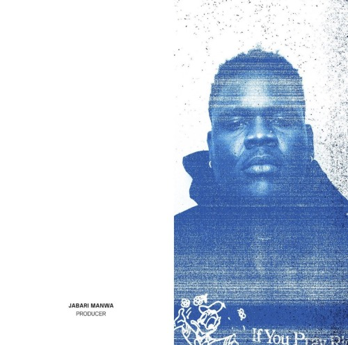

JABARI MANWA.
Jabari Chester Manwarring is a Grenadian record producer best known for being apart of the producing duo "Q3" (along with Kiko Merley) and for being one of the main record producers for the American boyband BROCKHAMPTON.
Born and raised in Grenada, Jabari Manwarring used to work as a bank auditor before he joined the group but would always go back home and make beats in his spare time. Before joining the group, he already knew soon-to-be member Kiko Merley as they became a production duo called "Q3". Jabari met Kevin Abstract on the "KanyeToThe" forum and he later made the move to Los Angeles, California along with Kiko.